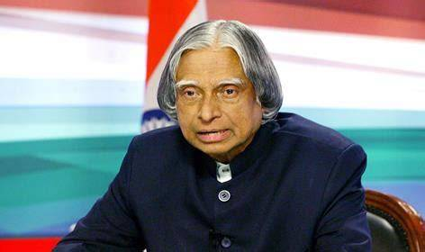

The Missile Man of India | Inspiring Millions

Dr. A. P. J. Abdul Kalam was an Indian aerospace scientist and the 11th President of India. He played a key role in India's civilian space and missile development programs.
He was born in Rameswaram, Tamil Nadu, and came from a humble background. Despite many challenges, he pursued science and became one of India's greatest scientists.
Kalam was widely known for his simplicity, vision for youth, and dedication to education. He inspired millions of students to dream big and work hard.
"Dream, dream, dream. Dreams transform into thoughts and thoughts result in action."